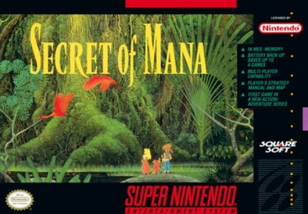

RPG · 1993
Secret of Mana
Real-time party combat and a ring menu that never paused the world.

Cover: Wikipedia: Secret of Mana
Facts
- Released
- 1993-08-06
- Genre
- Action RPG
- Category
- RPG
- Platforms
- Mobile, Nintendo, PC
- Developers
- Square
- Publishers
- Square, Square Enix